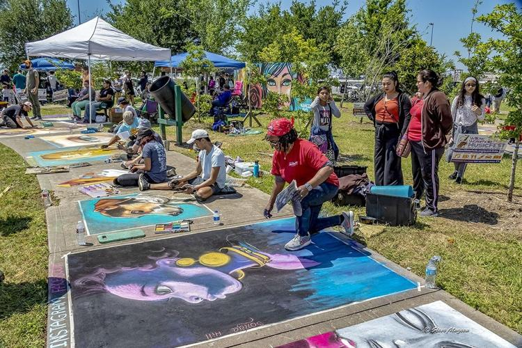

Bird surveys, fishing clinics, volunteer workdays, guided hikes, and seasonal celebrations: there's a reason to come back every month.

Celebrate art, nature, and community at Willow Waterhole's inaugural chalk art festival. Enjoy chalk artists, family activities, educational exhibits, food vendors, and more.
Learn MoreThese programs run throughout the year. Most are free and open to all.
A guided survey in partnership with Houston Audubon and the Nature Discovery Center. Meet at The Gathering Place lot. All skill levels welcome, beginners especially.
Hands-on stewardship: native planting, trail care, and habitat restoration. A great way to learn the park by helping care for it.
Learn the basics in a hands-on session. Equipment and guidance provided, then out to Westbury Lake to fish. Great for kids and beginners.
Walks explore prairie landscapes, wildlife, foraging, and scenic overlooks. All experience levels welcome.
Special programming and community celebrations marking three national park and nature holidays each year.
The prairie bursts into Houston's signature wildflower each spring, one of the best times of year to visit.
Willow Waterhole's trees turn bronze, gold, and red in Houston's fall season, one of the most peaceful times to walk the trails.
Eight miles of paved and crushed-granite trails make Willow Waterhole a favorite for community fun runs, scholastic cross-country meets, and cycling.
For dates and registration, email info@willowwaterhole.org or follow us on Facebook and Instagram.
News, events, and updates from the Conservancy, straight to your inbox.
One or two emails each month. Unsubscribe anytime.